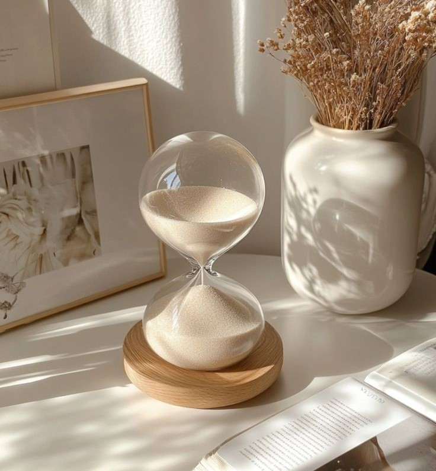

Finding simplicity in life
Life can get complicated really quickly, but it doesn’t have to be. Sometimes the key isn’t in chasing a brand-new lifestyle, but in learning how to find simplicity within the life you’re already living.
continue reading
July 19, 2019 | 3 comments